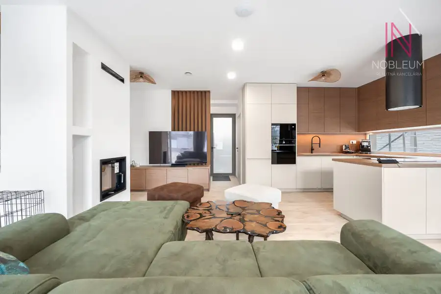
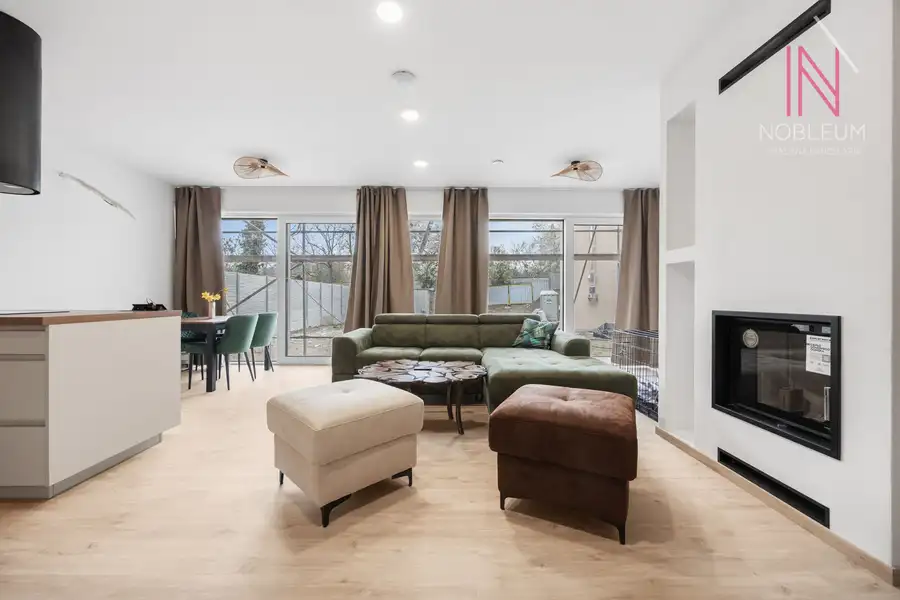
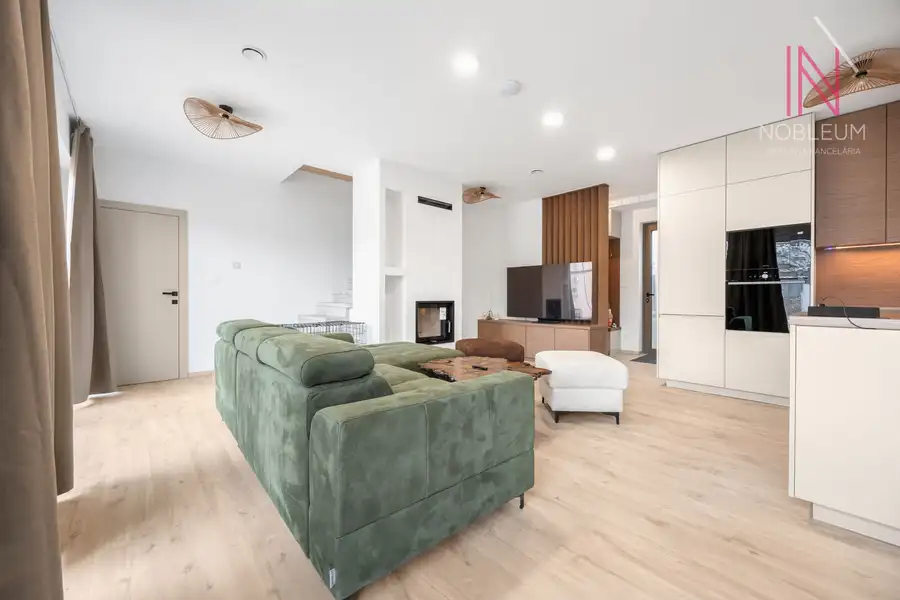
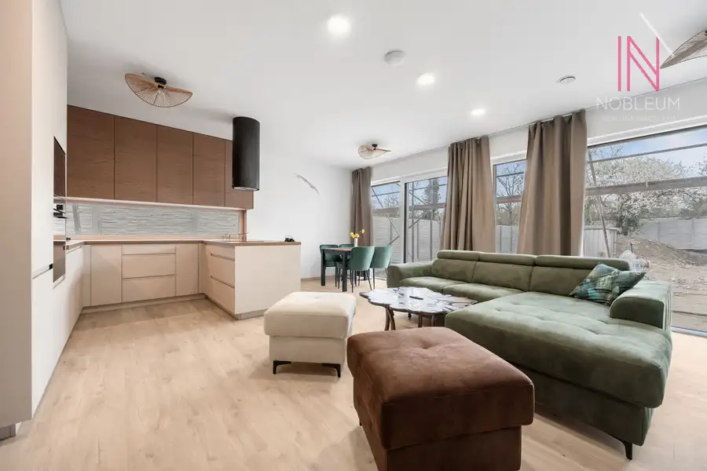
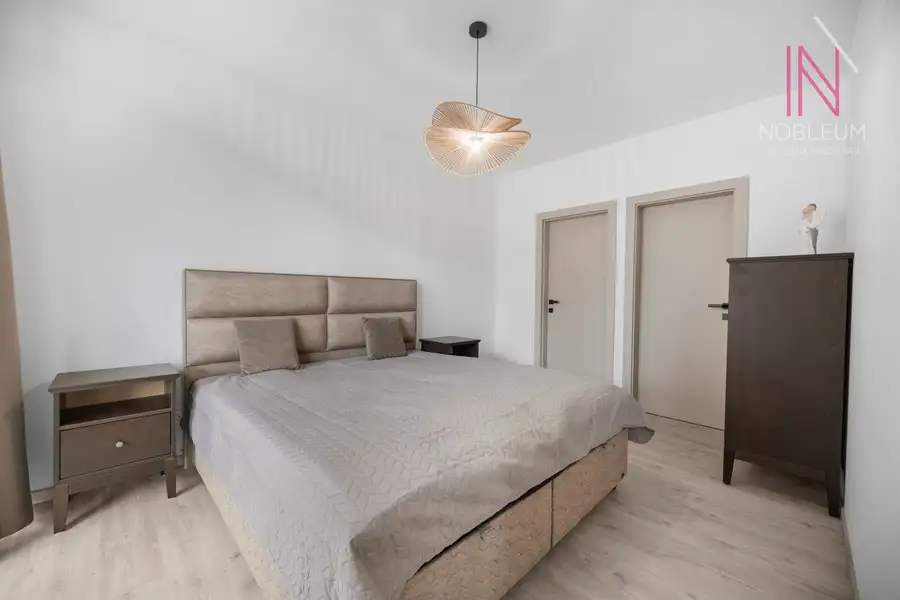
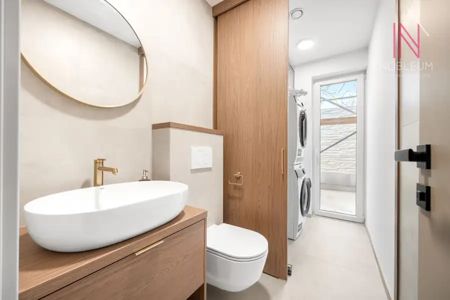
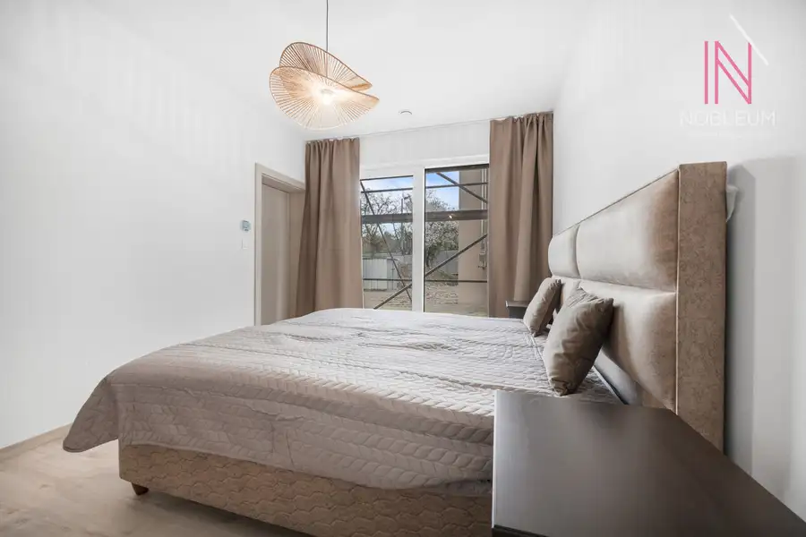
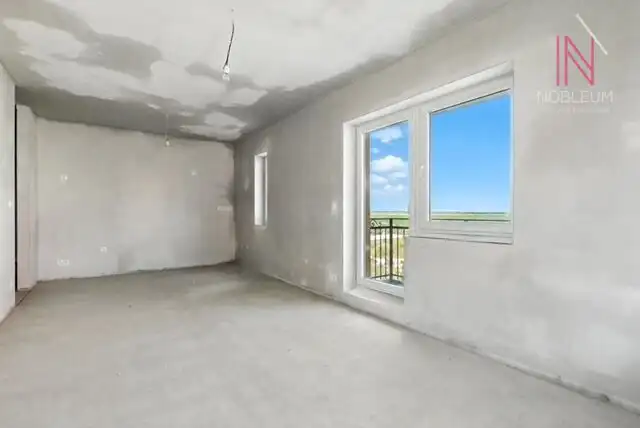
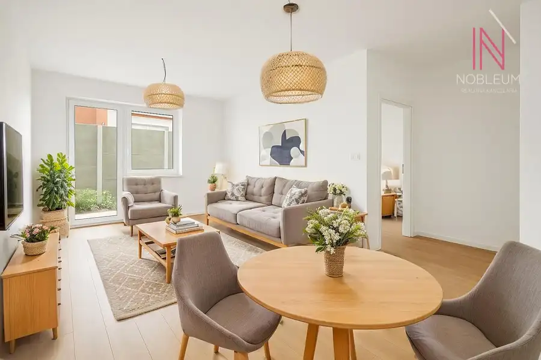
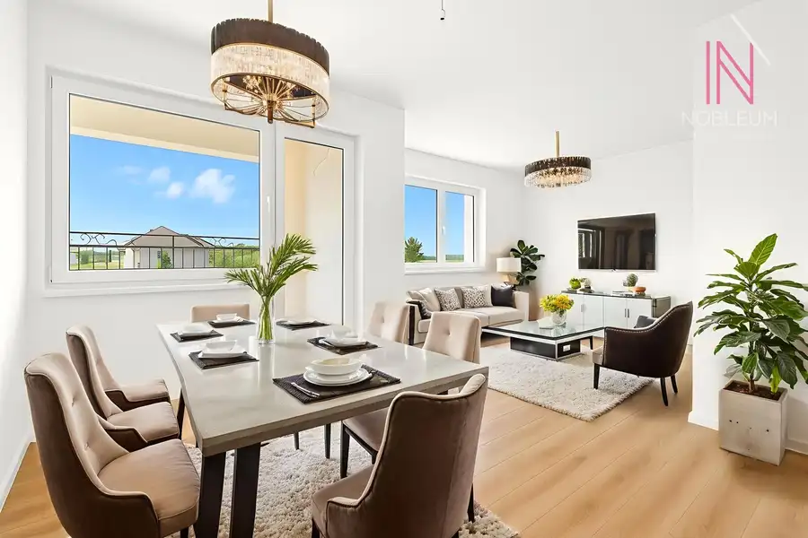

Investičná príležitosť bezbarierový RD s 2 bytovými dvojizbovými jednotkami.
Ružinov, Bratislava







- Plocha1 m²
- StavNovostavba
- VlastníctvoOsobné
O nehnuteľnosti
INVESTIČNÁ PRÍLEŽITOSŤ – NOVOSTAVBA NA REPÍKOVEJ ULICI, BRATISLAVA!Dva samostatné 5-izbové rodinné domy na predaj – developerský projekt na rozhraní Ružinova a VrakuneKolaudácia projektu: február 2026 RD 1 – INVESTIČNÁ PRÍLEŽITOSŤ S DVOMA BYTOVÝMI JEDNOTKAMI - cena 629 000 EUR RD 2 - SAMOSTATNÝ RODINNÝ DOM - cena 618 000 EUR Viac. info tu: http://bit.ly/4nSdGvFRD 1 - s bezbarierovým prístupom a dvoma plne zariadenými bytovými jednotkami v ŠTANDARDE s kuchynskou linkou, súčasťou nej sú spotrebiče a všetky izby sú plne zariadené IKEA nábytok. Byt č. 1 - VRCHNÉ PODLAŽIE – 2-izbový byt, 70 m²•Obývačka s jedálňou•Spálňa•Plne zariadená kuchyňa + spotrebiče•2× kúpeľňa•Komora•Predzáhradka a parkovacím miestom Aktuálne prenajaté: 1 000 €/mesiac vrátane energií. Nájom 750 eur + energie 250 eur. Ročný čistý výnos 9000 eur.DOLNÉ PODLAŽIE – 2-izbový byt 70 m2 - nábytok robený na mieru•Obývačka s kuchyňou + spotrebiče + krb•Spálňa•Šatník•2× kúpeľňa•Záhrada 465 m2 Flexibilita využitia: Dom je možné jednoducho prestavať na jeden samostatný rodinný dom – stačí zrušiť priečku ku schodisku. INVESTIČNÝ POTENCIÁL•Dve samostatné bytové jednotky = dva príjmy z prenájmu•Horný byt už generuje príjem•Ročný čistý výnos po odrátaní nákladov cca 9 000 €•Plne zariadené = okamžitý výnos bez ďalších investícií•Možnosť prerobiť na jeden samostatný rodinný dom KONŠTRUKCIA A VYBAVENIE•Protihlukové tehly, zateplenie polystyrén 20 cm•Nadštandardné plastové okná s trojsklom•Hliníkové vstupné dvere s trojbodovým zámkom a bezpečnostným trojsklom•Šikmá strecha – plechová krytina KJG Click systém•Fasáda: silikón minerál zrno, hnedá farba•Rekuperácia, podlahové kúrenie s termostatmi•3× klimatizácia•Kamerový systém + alarm•Optický internet (UPC) ŠTANDARD V CENE✔️ Vinylové podlahy✔️ Zárubne a interiérové dvere✔️ Obklady a dlažby✔️ Kompletné sanitárne vybavenie✔️ Zábradlie na schodisku✔️ Exteriérové rolety a žalúzie✔️ Namontovaná klimatizácia✔️ Kamerový systém a alarm✔️ Zásuvky a vypínače✔️ Plne zariadené obe bytové jednotky (nábytok, spotrebiče, kompletné vybavenie)BEZBARIEROVÝ PRÍSTUPDom disponuje bezbarierovým prístupom – vhodný pre osoby so zníženou pohyblivosťou alebo rodiny s malými deťmi.Kontakt: 0903 297 300mail: krnavcova@nobleum.sk
Parametre
- Druh
- Rodinný dom
- Druh domu
- Klasický dom
- Dátum zverejnenia
- 11. 05. 2026
- Energetický certifikát budovy
- nie je
- Plocha pozemku
- 465 m²
- Počet nadzemných podlaží
- 2
- Rok kolaudácie
- 2026
- Rok výstavby
- 2025
- Stav nehnuteľnosti
- Novostavba
- Terén pozemku
- Iný
- Typ
- Predaj
- Typ konštrukcie
- Tehlová
- Vlastníctvo
- Osobné
- Zariadenie
- Zariadené kompletne
- Zastavaná plocha
- 170 m²
- Úžitková plocha
- 1 m²
Kde to je


Mohlo by Vás zaujímať

BytNové 227 000 €3 izbový byt v Senci s balkónom Senec 3-izbový69.37 m²2. podlažie
BytNové 227 000 €3 izbový byt s terasou v Senci Senec 2-izbový41 m²1. podlažie
BytNové 195 000 €2 izbový byt s loggiou v Senci na Dlhej ulici, novostavba Senec 2-izbový51.74 m²2. podlažie